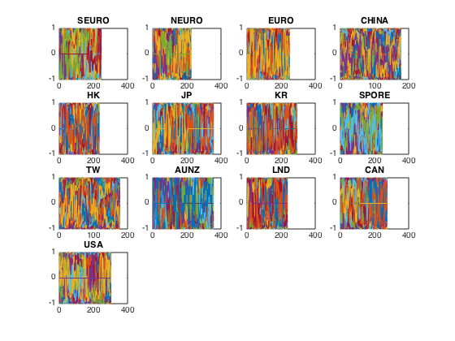
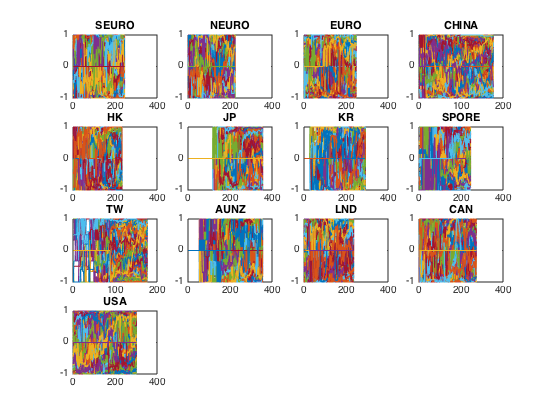
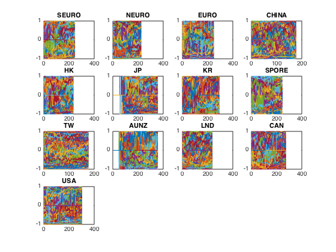
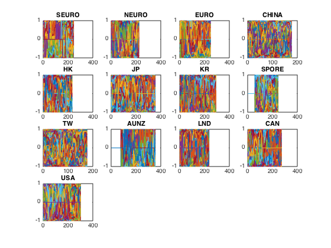
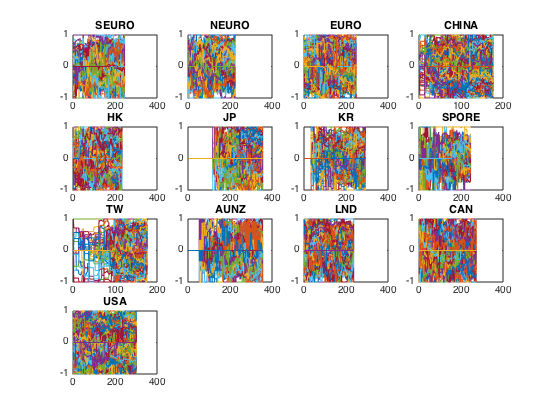

Combined Factors - going global(process data)
load the data from all countries.
Contents
Retrieve the big data
load('../Big Data/data_equity_list.mat'); load('../Big Data/data_historical_data_jan16.mat'); load('../rfr_ts.mat'); load('../cap_benchmark_ts.mat'); load('../spx_ts.mat'); equity_list = equity_list(1:size(storage0,1),:); equity_list = fun_update_equity_list(storage0,equity_list);
Get score and px from different regions in order.
selector{1} = strcmp(equity_list(:,2),'GA')|strcmp(equity_list(:,2),'PL')|strcmp(equity_list(:,2),'SM')|strcmp(equity_list(:,2),'AV');
selector{2} = strcmp(equity_list(:,2),'DC')|strcmp(equity_list(:,2),'FH')|strcmp(equity_list(:,2),'ID')|strcmp(equity_list(:,2),'NA')|strcmp(equity_list(:,2),'NO')|strcmp(equity_list(:,2),'SS');
selector{3} = strcmp(equity_list(:,2),'FP')|strcmp(equity_list(:,2),'GR')|strcmp(equity_list(:,2),'BB')|strcmp(equity_list(:,2),'IM')|strcmp(equity_list(:,2),'LX')|strcmp(equity_list(:,2),'SW');
selector{4} = strcmp(equity_list(:,2),'CH');
selector{5} = strcmp(equity_list(:,2),'HK');
selector{6} = strcmp(equity_list(:,2),'JP');
selector{7} = strcmp(equity_list(:,2),'KS');
selector{8} = strcmp(equity_list(:,2),'SP');
selector{9} = strcmp(equity_list(:,2),'TT');
selector{10} = strcmp(equity_list(:,2),'AU')|strcmp(equity_list(:,2),'NZ');
selector{11} = strcmp(equity_list(:,2),'LI')|strcmp(equity_list(:,2),'LN');
selector{12} = strcmp(equity_list(:,2),'CN');
selector{13} = strcmp(equity_list(:,2),'US');
names = [{'SEURO'} {'NEURO'} {'EURO'} {'CHINA'} {'HK'} {'JP'} {'KR'} {'SPORE'} {'TW'} {'AUNZ'} {'LND'} {'CAN'} {'USA'}];
i = 1;
while i<=13
equity_list_large = equity_list(selector{i},:);
history_large = storage0(selector{i},:);
equity_list_large = equity_list_large(not(cellfun(@isempty,history_large(:,1))),:);
history_large = history_large(not(cellfun(@isempty,history_large(:,1))),:);
take data sample, load data & the list
index_large = datasample(1:length(equity_list_large),length(equity_list_large),'Replace',false);
px_large = fun_load_price_large(history_large, equity_list_large, index_large);
px = fun_clean_data_alt(px_large,0.01);
list = equity_list_large(index_large,:);
load observations
mom_ts = fun_calculate_mom(px_large); pb_ts = fun_load_observations_large(history_large, equity_list_large, index_large,'pb'); cap_ts = fun_load_observations_large(history_large, equity_list_large, index_large,'cap'); beta_ts = fun_load_observations_large(history_large, equity_list_large, index_large,'beta'); grossmargin_ts = fun_load_observations_large(history_large, equity_list_large, index_large,'gm'); turnover_ts = fun_load_observations_large(history_large, equity_list_large, index_large,'turnover'); roa_ts = fun_load_observations_large(history_large, equity_list_large, index_large,'roa'); leverage_ts = fun_load_observations_large(history_large, equity_list_large, index_large,'leverage');
calculate score
score_mom_ts = fun_calculate_score(mom_ts,list,'sectorsort',px); score_pb_ts = -fun_calculate_score(pb_ts,list,'sectorsort',px); score_cap_ts = -fun_calculate_score(cap_ts,list,'sectorsort',px); score_beta_ts = -fun_calculate_score(beta_ts,list,'sectorsort',px); score_leverage_ts = -fun_calculate_score(leverage_ts,list,'sectorsort',px); score_roa_ts = fun_calculate_score(roa_ts,list,'sectorsort',px); score_grossmargin_ts = fun_calculate_score(grossmargin_ts,list,'sectorsort',px); score_turnover_ts = fun_calculate_score(turnover_ts,list,'sectorsort',px); score_leverage_ts = fillts(score_leverage_ts,0); score_roa_ts = fillts(score_roa_ts,0); score_grossmargin_ts = fillts(score_grossmargin_ts,0); score_turnover_ts = fillts(score_turnover_ts,0); score_quality_ts = score_leverage_ts+score_roa_ts+score_grossmargin_ts+score_turnover_ts; score_quality_ts = fun_combine_score(score_quality_ts);
Trim
score_mom_ts = score_mom_ts(120:end-5);
score_pb_ts = score_pb_ts(120:end-5);
score_cap_ts = score_cap_ts(120:end-5);
score_beta_ts = score_beta_ts(120:end-5);
score_quality_ts = score_quality_ts(120:end-5);
score_mom_ts = fillts(score_mom_ts,0);
score_pb_ts = fillts(score_pb_ts,0);
score_cap_ts = fillts(score_cap_ts,0);
score_beta_ts = fillts(score_beta_ts,0);
score_quality_ts = fillts(score_quality_ts,0);
score_ts = {score_mom_ts; score_pb_ts; score_cap_ts; score_beta_ts; score_quality_ts};
px = px(120:end-5);
scores{i} = score_ts;
pxs{i} = px;
lists{i} = list;
i = i+1;
end save('global_data.mat','scores','pxs','lists','names','rfr_ts','spx_ts');
Data inspection
j = 1; while j <= 5 i = 1; while i <= 13 subplot(4,4,i) plot((fts2mat(scores{i}{j}))); title(names{i}); i = i+1; end snapnow; j = j+1; end    